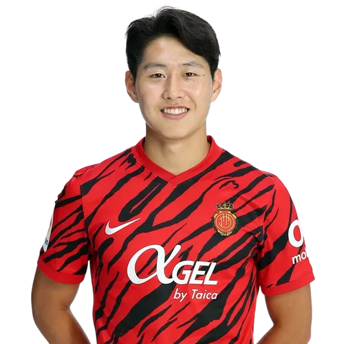

이강인
Lee Kang-in


소속팀 :
RCD 마요르카
RCD 마요르카
출생 :
2001년 2월 19일(22세) 인천광역시 남동구 간석동
2001년 2월 19일(22세) 인천광역시 남동구 간석동
신체 :
키 173cm / 체중 63kg
키 173cm / 체중 63kg
포지션 :
공격형 미드필더, 세컨드 스트라이커, 윙어
공격형 미드필더, 세컨드 스트라이커, 윙어
주발 :
왼발
왼발
플레이스타일 :
이강인은 현재 계속해서 성장하고 있는 차세대 대한민국의 핵심 미드필더라고 할 수 있다. 비교적 세밀한 기술보다는 피지컬과 활동량을 주무기로 삼는 선수가 많았던 대한민국에서 보기 드문, 테크니션 유형의 특급 유망주가 등장했다는 사실은 큰 주목을 받게 했다. 이로 인해 올려치기만큼이나 내려치기도 많았고 장단점에 대한 논쟁도 격했다. 그렇게 2021-22시즌까지만 해도 고전적인 10번 역할의 옷 말고는 어울리는 옷이 없던 후보선수였으나, 불과 만으로 3개월도 채 되지 않는 아주 짧은 기간 동안 급격하게 성장하면서, 현재는 팀에 없어서는 안 되는 완전한 붙박이 주전으로서 마요르카에서 뛰고 있다.
이강인은 현재 계속해서 성장하고 있는 차세대 대한민국의 핵심 미드필더라고 할 수 있다. 비교적 세밀한 기술보다는 피지컬과 활동량을 주무기로 삼는 선수가 많았던 대한민국에서 보기 드문, 테크니션 유형의 특급 유망주가 등장했다는 사실은 큰 주목을 받게 했다. 이로 인해 올려치기만큼이나 내려치기도 많았고 장단점에 대한 논쟁도 격했다. 그렇게 2021-22시즌까지만 해도 고전적인 10번 역할의 옷 말고는 어울리는 옷이 없던 후보선수였으나, 불과 만으로 3개월도 채 되지 않는 아주 짧은 기간 동안 급격하게 성장하면서, 현재는 팀에 없어서는 안 되는 완전한 붙박이 주전으로서 마요르카에서 뛰고 있다.
등번호 :
국가대표 18번, 클럽팀 19번
국가대표 18번, 클럽팀 19번
팀 커리어 :
발렌시아 CF 메스타야 (2017~2019) -> 발렌시아 CF (2018~2021) -> RCD 마요르카 (2021~ )
발렌시아 CF 메스타야 (2017~2019) -> 발렌시아 CF (2018~2021) -> RCD 마요르카 (2021~ )
국가대표 :
16경기 7득점(대한민국 U-20 / 2017~2019) | 10경기 3득점(대한민국 U-23 / 2021~ ) | 12경기(대한민국 / 2019~ )
16경기 7득점(대한민국 U-20 / 2017~2019) | 10경기 3득점(대한민국 U-23 / 2021~ ) | 12경기(대한민국 / 2019~ )
SNS :
 |
| 
|
응원가 :